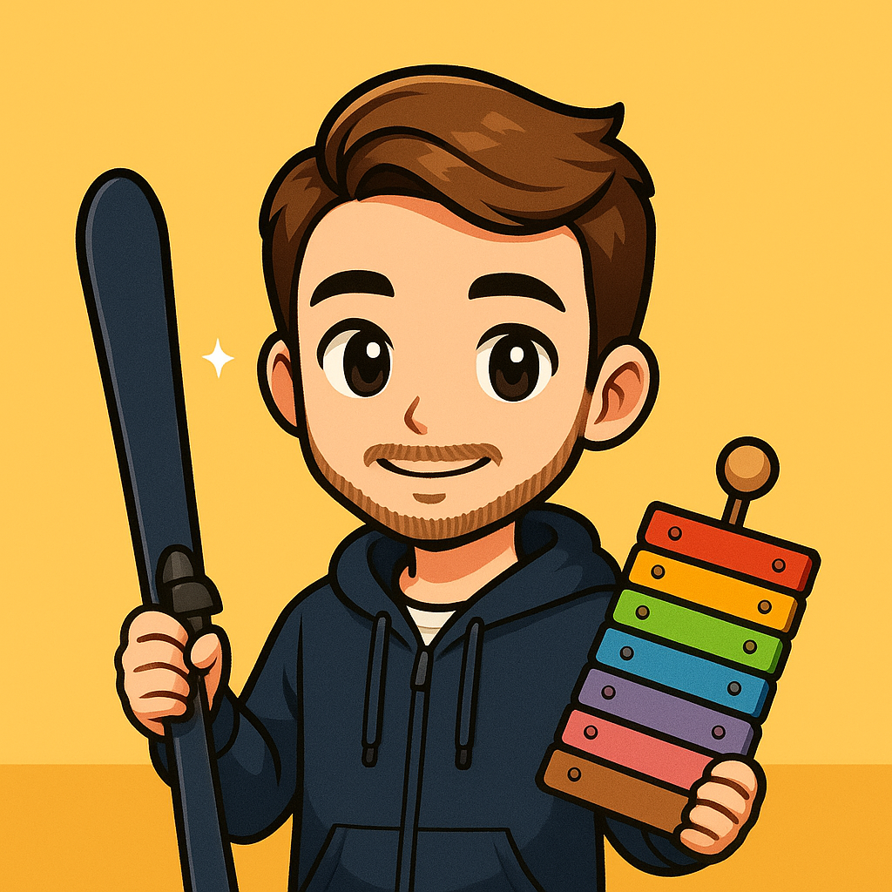

Hello,
I'm Alexandre
Beyond engineering, I am
Beyond engineering, I am

My life is built on three fundamental pillars that define who I am and guide my daily choices. Each pillar complements the others, creating a harmonious balance between physical challenge, social impact, and intellectual curiosity.
Pushing my physical limits through triathlon and endurance sports. The discipline, perseverance, and mental strength developed through sport translate directly into every aspect of my life.
Contributing to causes that matter - from helping children with disabilities experience sports and aviation, to building inclusive communities through associative work.
An insatiable curiosity drives me to explore new places, learn about climate science, and understand sustainable solutions for our planet's future.
"Every race is a lesson in perseverance. Every finish line is a new beginning."
Half Ironman completion - 1.9km swim, 90km bike, 21km run
Multiple podium finishes in regional competitions
First marathon completed - Personal best time
Introduction to triathlon - 5 races completed
Helping children with disabilities experience the joy of running and movement. Through adapted training sessions and inclusive events, we create opportunities for every child to push their limits and discover their strength.
Contributing to the development of an association that makes aviation accessible to children with disabilities. Helping them experience the magic of flight and discover new perspectives - literally and figuratively.
Beyond engineering projects, the racing team taught me the power of collaborative work, shared passion, and building something greater than ourselves. Managing team dynamics, fostering inclusion, and creating a strong community culture.
My passion for outdoor sports and nature has naturally led me to a deep interest in climate science and sustainable development. Understanding the challenges our planet faces and exploring solutions is not just intellectual curiosity - it's a personal mission.
Spending time in mountains and natural spaces creates a profound sense of responsibility to protect these environments for future generations.
Actively learning about climate change, environmental science, and the latest research on sustainability challenges and solutions.
Integrating sustainable practices into daily life - from transportation choices to consumption habits and supporting eco-friendly initiatives.
Bridging engineering expertise with environmental challenges - exploring how technology can be part of the solution for a sustainable future.
"We do not inherit the Earth from our ancestors; we borrow it from our children."
These values aren't just words - they're principles I live by every day, reflected in my athletic pursuits, community work, and approach to life's challenges.
Always asking questions, exploring new fields, and seeking to understand the world more deeply. From climate science to new sports techniques, curiosity drives continuous growth.
Learning aviation mechanics to better contribute to Aviation Solidaire
Bringing energy and enthusiasm to everything - whether it's training for a triathlon, developing sustainable solutions, or mentoring young athletes.
Organizing weekly training sessions for handisport running programs
Believing that the best results come from teamwork. Whether in racing teams, associative projects, or environmental initiatives, collaboration amplifies impact.
Building bridges between different associations for greater community impact
Understanding that meaningful achievements require sustained effort. From completing an Ironman to building lasting community programs, perseverance turns vision into reality.
Training through challenges to achieve athletic goals and inspire others